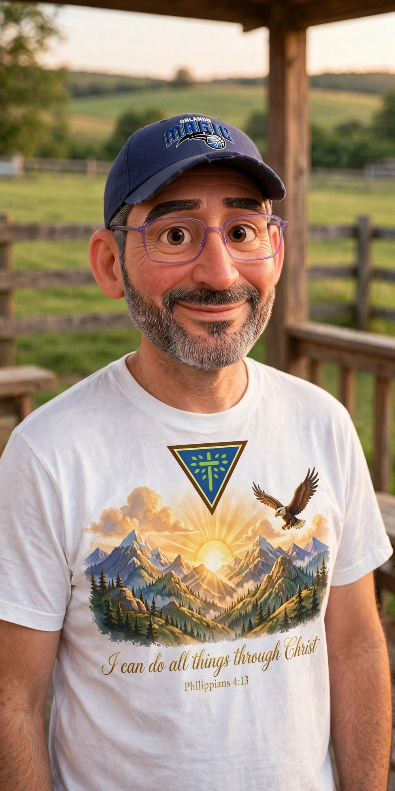

The Open Door
“Every sheep counted — with a face and a name, by permission and by love.”
Here’s All You Do — It Takes a Minute
- Step 1: Your info here. Write your name and a few words in the letter below.
- Step 2: Your picture here. When you tap the button, your mail opens with your letter ready — attach a picture you like before you send it. No picture handy? Just say which photo, and Jason will handle it.
- Step 3: Up on the wall. Jason reads every letter himself and hangs you on the Family Wall by hand.
Everything else on this page is just the story — read it whenever you like, or not at all. The three steps above are the whole thing.
Write to Jason — a Letter, Not a Form
he reads every word himselfJoining works the way everything warm works here: you write Jason a letter. Fill this in, and it opens in your own mail app, addressed straight to him — if you chose Door One, attach your photo to that email. Jason reads every letter himself, and your place is prepared by hand, with the same care as everything on this wall. Nothing you write here is stored on this website — it travels like a letter, from your hands to his.
Choosing Door One? Don’t forget to attach your photo to the email that opens — that’s the picture we’ll prepare for the wall, in exactly the form you picked above.
The whole story — for whenever you have time.
There’s a Place on This Wall for You
if you want it — only if you want itIf you watch TruVINE from anywhere on God’s earth — any country, any language, any kitchen table — this wall is yours as much as it is ours. It was built for one reason: fellowship. Counting the flock is good, and we count it carefully. But a family isn’t a number. A family has faces, and names, and room at the table.
So the door is open: send your picture, and we’ll add you to the family — legit, on the wall — if you give your permission and you want to be there. Completely optional, always. Nobody is missing from this family for declining; you are loved exactly the same from the pew as from the picture frame.
“…I have other sheep which are not of this fold. I must bring them also, and they will hear my voice. They will become one flock with one shepherd.” John 10:16 — World English Bible
The Wall — The First Yeses
hung only by free yeses

The first family has come home. Jason and Share Bear hang here by their own free yes, each in the form they chose, each portrait seen and approved by its owner’s own eyes before it was hung. Room remains — an open wall with room is more honest than a crowded one that isn’t real, and every future face will arrive the same way these did: by permission, and by love.
- Ian
Start With Jesus
five small steps, at your own paceNew friend, everything in this family begins with Jesus — His Word first, and the welcome right behind it. If you’re standing at the door wondering how a stranger becomes family here, it goes like this:
-
Begin with Jesus and His Word
Before us, before the wall — meet Jesus in His own words. The whole Bible is read aloud there in Grandpa Teddy’s voice, every chapter of it, free to hear. No account to make, nothing tracked, nothing asked of you. Just listen, as long as you like, wherever you are.
-
Watch with the family
On the farm, Grandpa Teddy reads God’s Word and the family gathers round — new films, and daily encouragement for the ordinary days in between. Come sit with us a while.
-
Take your place
When you’re ready — only when you’re ready — this wall has three doors, and none of them is lesser: your photo on the wall, your name on the roll, or the quiet door, anonymous and held in prayer. Entirely your choice, and your choice can change at any time, with one letter.
-
Meet the family
Get to know the faces of the films — Grandpa Teddy and the flock who carry God’s Word through every story. They’re glad to meet you.
-
Step onto the porch
Last, wander the porch — the public rundown of the whole house, everything TruVINE is and does, laid out in one place. Take your time; the porch is patient.
And hear the heart of it: not one of these steps is an obligation. Stop at any step, stay as long as you like — you are loved here exactly the same, and anything you ever choose on this wall, you can un-choose the same way you chose it. Welcome in, family.
Three Doors — None of Them Lesser
your choice, changeable any timeHow you take your place is entirely your choice — and you can change your mind in either direction at any time, with one letter. The third door is not a lesser door: some of the dearest members of any family are the quiet ones. And hear this plainly, because love tells the truth: if being seen as a follower of Jesus could carry any risk where you live, the quiet door exists for you, and it is an honored door.
The Covenant, in Plain Words
written down, so we can be held to it-
Your name is your choice.
A real first name, a nickname, or a description like “a sister in Lahore” — whatever you want to be known by. Or no name at all. Nobody must publish a legal name to belong to this family.
-
Your face comes in the form you choose.
Your photograph as-is — or the farm-style Pixar treatment, at a level of variance you set: low, and it is unmistakably, tenderly you; higher, and the likeness is softened so strangers couldn’t pick you out of a crowd, while you and those who know you still know exactly who it is. Any artwork is rendered, shown to you, and hangs only on your approval of the actual portrait — and it is labeled as artwork wherever it appears. A photograph is never quietly turned into artwork behind your back. And the clothing in any artwork is your choice too: you may be shown clothed in TruVINE apparel, or in the very clothes you are wearing in your photo — your likeness, your wardrobe, your call. Nobody has to wear the brand to belong on this wall.
-
Children come only by a guardian’s yes.
No child’s photo without a parent or guardian’s explicit written consent, sent by the guardian themselves — no exceptions because a picture is sweet. If consent is ever in doubt, the photo doesn’t go up.
-
Your yes can become “no longer” at any time.
Consent is revocable, always. One letter, and your photo and name come down — promptly, no questions, no hard feelings, no explanation owed. A “yes” is kept with care; a “no longer” erases both.
-
Family photo days, not a drip feed.
Additions land in gentle waves — a family photo day — and every single addition passes Jason’s own review before it appears. Nothing goes up unlooked-at, and nothing goes up unasked-for.
-
When you say yes, you get welcomed — not processed.
A yes on this wall is never handed to a machine or a queue. Jason answers it himself: your place here is prepared by hand, and he makes you a welcome of your own — the Package for New Sheep: a private page made just for you, where your place in this family is kept, with a letter back from Jason himself. It comes in his time, made carefully, one sheep at a time — that isn’t slowness here; it’s the whole point. However long it takes, your place is kept from the moment you write.
-
Counted honestly, never decoration.
The wall is tended like the board: true counts, real people, nobody used as a prop and nobody inflated into a number. Every sheep counted — with a face and a name, by permission and by love.
One more word, in love: if showing your face as a believer could ever put you at risk where you live, please take the quiet door. We would rather hold you in prayer, unseen, than ever see you harmed for the sake of a picture.
The Record So Far
The Roll above waits for names to come. This smaller scroll is a testimony to what the Lord has already done — the field, as it stands today:
Family tuning in from the United States, the Philippines, Indonesia, and Kenya.
Counted with gratitude — every one a person, every person prayed for.